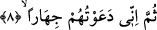
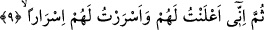

Onlar, bana uymak ve itâat etmekten çok şiddetli bir biçimde “kibirlendikçe
kibirlendiler”, bu hususta kendilerini büyüklenme tuttu. Çünkü onlar; “Sana düşük
seviyeli kimseler tâbi olup dururken biz sana îman eder miyiz hiç!” (eş-Şuara,
26/111) dediler.
Âriflerden birisi şöyle der: Kim mâsiyet işlemekte ısrar ederse bu hâli onun dalâlette
devam etmesine sebep olur. Neticede o kişi çirkin amellerini güzel görmeye başlar.
Onları güzel görünce de böbürlenir ve Allah’ın dostlarına karşı kendini üstün görür.
Artık bundan sonra o insanların nasîhatlerini kabul etmez.
Sehl (k.s.) der ki: Günahta ısrar kişide kibir meydana getirir. Kibir cehâleti, cehâlet
bâtılda haddi aşmayı, bu kalp kasvetini, kalp kasveti nifâkı, nifak ise küfrü doğurur.
8. Sonra, ben kendilerine haykırarak dâvette bulundum.
Yâni ben onları açıktan dâvet ettim, onların mahfillerinde âşikâre, yüksek sesle
çağırdım. “Cehr/açık açık” kelimesi, herhangi bir şeyin, görme ya da işitme organına
aşırı bir şekilde zuhûr edip, ortaya çıkması demektir.
9. Sonra, onlarla hem açıktan açığa hem de gizli gizli konuştum.
Bu âyet-i kerîme kâfirleri dâvetin, -bir önceki âyette bütün vakitlerde yapıldığını
zikrettikten sonra- bütün hâllerde işlendiğine işâret etmektedir. Yâni onları tekrar tekrar,
bir daha bir daha muhtelif şekillerde, çeşitli üsluplarla dâvet ettim. “Sümme/sonra”
kelimesi dâvet şekillerinin çeşitliliğini ifâde etmek için getirilmiştir. Açıktan dâvet,
gizli dâvetten daha zordur. İkisini birleştirmek ise birini yapmaktan daha zordur.
“İlan” ise gizli söylemenin zıddıdır. Araplar şöyle derler: “Filancaya gizlice bir şey
fısıldadım”. Yâni kimseye sezdirmeden ona gizlice bir söz söyledim. “Cehr” kelimesi,
başkası da duyacak şekilde açıktan bir söz söylemek demektir.
“Sümme/sonra” kelimesinin terâhî; yâni dâvet şekillerinden birisinin zaman itibariyle
diğerinden sonraya bırakıldığını ifâde etmek için kullanılmış olması da mümkündür.
Nûh (a.s.) onlara önce nasîhat ederek başlamış, sonra gizlice dâvet etmiştir. Onlar ise
dört şekilde karşılık vermişlerdir: Kulak tıkamak, elbiseyle başlarını örtmek, günahta
ısrarlı olmak ve kibirlenmek. Bundan sonra Nûh (a.s.) ikinci olarak açık dâvete
başlamıştır. Bu da tesirli olmayınca bu kez her iki usûlü birden kullanmaya başlamış;
yâni açık dâvetle gizli dâveti iç içe yapmıştır. Onlarla toplu olarak konuştuğu gibi, her
biriyle tek tek gizlice de konuşmuştur.